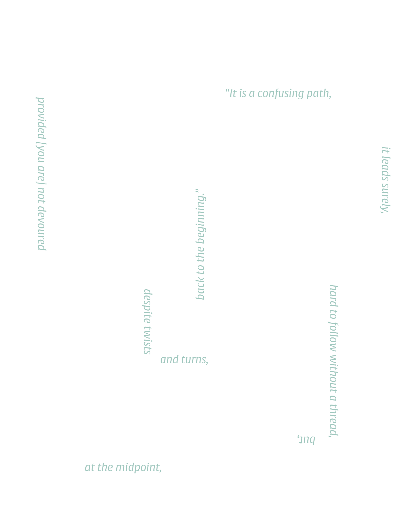

Mythical Roots
The Labyrinth is famously known for its association with the Greek myth which goes as follows:
Once upon a time, the sea god Poseidon sent a white bull to the court of Minos at Knossos in Crete for ritual slaughter. declined to kill the animal and in revenge Poseidon engendered in Pasiphae, the queen of Minos, an uncontrollable lust for the bull. The outcome of her sexual gratification was none other than the . The ever-ingenious Minos hired the architect to construct a space in which to house the savage beast.While the construction of the Labyrinth was underway, King Minos discovered that his only human son with Pasiphae, Androgeos, had been killed. Minos blamed the Athenians for the destruction of his family line. He sailed against the Athenians and harassed them until they agreed to pay the price for his son's death. Minos demanded that Athens pay a tribute to Crete of seven maidens and seven youths every nine years. (There is some contradiction in the sources about how often these tribute were made, from every nine years to once a year). These tributes would then be placed in the Labyrinth for the Minotaur to devour. Reluctantly, the Athenians submitted to Minos' terms and King Minos returned to Crete.
was said to have volunteered for the third tribute of youths. Death now turns to a love story. He discovered to his felicitous surprise that Ariadne, one of the King’s daughters, had fallen in love with him. She supplied Theseus with a thread of gold by which he could retrace his course through the winding structure. Brave Theseus entered the labyrinth, slayed the Minotaur, retraced his steps back along the thread, set the palace on fire and escaped with Ariadne to Naxos where he deserted her. The rest is architecture and speculation.
his perspectives.”
the architect and
makes the labyrinth, not
his myopia who
“[I]t is the traveller and
The classic labyrinth cannot be mapped by its occupants; interior movement is entirely local, provisional and motivated by the binding purpose of arriving at a central destination. As such, labyrinths initiate serpentines, not trajectories. As an occupied site, or situation, a labyrinth might be best considered as a continuously cursive movement constructed on the rhetorical model of an extended periphrasis. As Pierre Rosenstiehl correctly discerns,
Once they reach the center, they are to have found the answer for which they were looking, so on the return trip they could emerge with a new understanding. By looking at the labyrinth in this way, one can see how it compares to the journey of life. Going through the labyrinth is like the trek every individual must take growing up.
A labyrinth has only one entrance and one exit. As people move along the pathway, taking its many twists and turns, they are expected to clear their minds and reflect upon life. They enter the labyrinth with a particular question or goal in mind, and as they walk through, they are meant to contemplate their question.
Many cultures throughout history use labyrinths and design them for inner enhancement and development, a path for one to experience. Across cultures, they all share the same meaning: spiritual growth, enlightenment, emergence, progress, and initiation.
